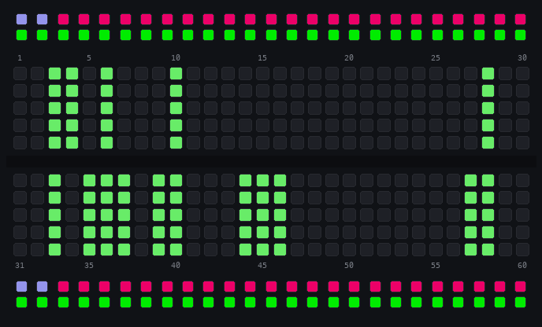
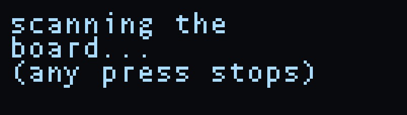
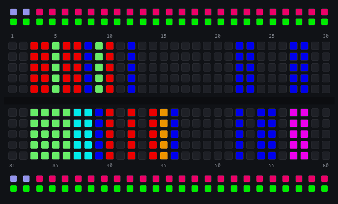
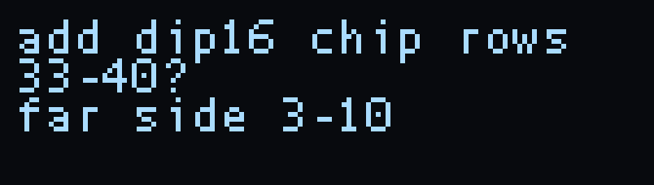
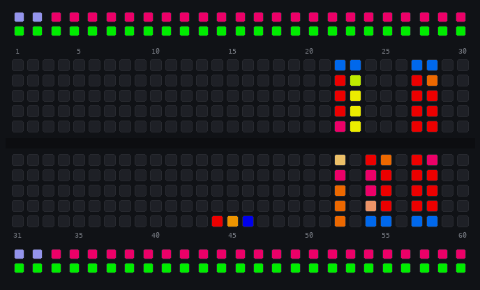

Parts
Your Jumperless can know what's plugged into it. Tell it a chip, module, or passive is on the board and it becomes a part: its pins get labeled, its power gets wired for you, tapping a pin tells you what it is, and if something's wired dangerously wrong the board warns you. If the part is a little OLED, the Jumperless will even drive it.
You still wire your own circuit with the probe like always, parts just make the board smarter about what's on it.
The Parts menu has four things in it:
Auto Scan- it figures out what's plugged in by itselfPlace Part- tell it what's plugged in and whereTest Part- re-measure a placed part to check it's what it says it isRemove Parts- take parts off, leg by leg or whole
Placing a Part
Parts > Place Part gives you a class picker on the breadboard LEDs:
Logic- 7400 / 4000 series ICsAnalog- 555s, op-amps, regulatorsDiscrete- resistors, caps, LEDs, diodesTransistors- BJTs and MOSFETsDisplays- OLED panels and friendsModules- BME280, MPU6050, and other breakout boardsRemove parts- same thing as the menu entry
Scroll with the clickwheel, click to pick a class, then pick your part the same way.
DIP chips: two taps
A DIP straddles the center line, but it can still face two ways (pin 1 bottom-left, or spun 180° with pin 1 top-right), so it gets two taps: tap the hole pin 1 is actually in, then the corner pin diagonally opposite it. That locks the orientation, and if your second tap isn't where a chip of that size could put it, it asks again (which also catches picking the wrong size chip before anything gets placed.) Typing the row numbers in the terminal works too.
Everything else: tap each signal
Modules and SIP-header parts have no standard pin order - one vendor's OLED is GND VCC SCL SDA, the next one's is VCC GND SCL SDA. So instead of guessing, the Jumperless asks you to tap each signal by name: the breadboard shows TAP VCC, then TAP GND, then TAP SCL, and so on. Wherever you tap is where that signal is - the part can be plugged in any orientation, or even spread across fly wires (any rows in the same half of the board work).
Every tap you land flashes that row in that signal's own color, and the rows you've already tapped stay lit in theirs, so you can see which row is which signal. (The flat green flash is the DIP pin 1 tap.) Tapped the wrong row? It won't let you tap the same row twice for one part, and clicking the wheel backs you out to try again.
Resistors, caps, LEDs, diodes and transistors don't work that way. The prompt is just TAP any leg and the order doesn't matter - after the taps the board measures the part and works out for itself which leg is the anode or cathode, or the emitter, base and collector. If it can't tell, it places the part anyway in tapped-row order and says couldn't verify pins. A two-lead part's ends still have to be one hole on the top half and the hole directly below it on the bottom half.
Power Pins
When a part is placed, its power pins get routed to a Rail automatically: a VCC pin goes to a rail that's already on at the voltage the part wants (5V or 3.3V) if there is one, otherwise to whichever rail is on, otherwise to the rail on its own half. GND pins connect to ground. So you don't have to wire them up yourself. Regulator outputs and VEE-style pins are left for you to wire.
The rails still obey you - nothing is hot until you turn a rail on, and the voltage is whatever you set. (Also worth knowing: most I2C modules are happiest with rails at 3.3V because the RP2350B can only pull the I2C lines up to 3.3V, if you add external pullups it should be fine at 5V)
If you tap a power pin onto a row that's already wired to a rail or to ground, the Jumperless leaves it alone - no automatic bridge either way, that row is yours. If it's the wrong polarity (VCC onto a grounded row) the part warning says so on the OLED and on serial (vcc_to_gnd, gnd_to_hot). It won't short a rail to ground for you (but be aware that it can still short through a wire or diode placed on the breadboard. Don't worry, this probably won't kill your Jumperless and you'll see the current ants go crazy.)
Test Part
Parts > Test Part shows a picker of your placed parts. Pick one and it re-measures it in place: discretes and transistors get the same electrical check the scan uses (so you can tell if it still reads like what you said it was), a display gets pinged to see if it's alive, a named chip gets a seated check - it reads the chip's protection diodes and says chip present / ESD 0.65V, or no ESD reply / seated? - and a generic IC record runs the full identify and offers to rename itself to whatever the vectors say it actually is. Anything else with more than three pins says can't test this one yet.
Remove Parts
Parts > Remove Parts works two ways. Tap a leg of a placed part and just that leg is removed - its bridge, its net name, its entry in the part - and removing the last leg removes the part itself. Or scroll the wheel through your placed parts (each one highlights on the board with its card on the panel) and a click removes the whole highlighted part. The scroll's last stop is All, which clears every part (it asks first - confirm with the probe's Connect button). Clearing the whole board (x) clears its parts too. Parts are saved with your slot, so they come back after a reboot.
Auto Scan
Or skip all that and make it figure out what's on the board by itself. Parts > Auto Scan lifts all your wiring out of the way (it goes back exactly as it was when the scan exits), pokes every row, and measures anything that conducts. It also parks both rails at 0 V and turns probe power off while it runs, so a powered circuit going dark is expected - both come back when it's done. Any press stops it - either probe button, the wheel, or any key in the terminal.
You can watch it work, the row it's testing sweeps down the board in rainbow and anything that conducts stays lit green. The OLED says which phase it's in. A pretty full board takes about 30 seconds.


Stuff it can find:
RESISTOR 4.7k,LED 1.85V,DIODE 0.65V,CAPACITOR- two-lead parts get typed and measured, with the anode lit red and the cathode blueBJT_PNP 0.59V(or NPN, or FETs) - lit emitter red, base amber, collector bluea chip?- it reads the chip's clamp diodes to find which rows are GND and VCC, then probes the rest of the pins against them (row 35 conducts - a pin)I2C 0x3C module- it powers the cluster briefly and asks if anything answers on the bus (this is how an SSD1306 module shows up)a 7-seg display?- all the segments light from one common pinrows 5-8: SSD1306? (sip module)- a run of rows in one half that fits a SIP module in the part database (if more than one record fits you get aWhich?picker instead)- parts you already placed just get named (
7SEG52 (placed)), and a lone noise row gets checked and ignored

When it's done it asks about each finding, one at a time. Same gestures as everywhere else, click or Connect = yes, hold or Remove = no (or y/n in the terminal, anything else bails out of the whole confirm pass). What the prompts do:

add RESISTOR rows 12-13?- places it as a part, same as if you did it throughPlace Partadd dip16 chip rows 33-40?- places a chip (it already paired the span with its mirror across the middle, that's thefar side 3-10on the second line)identify dip16 chip rows 33-40? powers it briefly- offered after every chip you add. It fingerprints each pin's clamp diodes, then actually powers the chip and runs the truth tables of everything in the part database that could fit. (If it can't work out which row is the chip's ground it tells you and the chip stays a generic IC.) Whatever passes shows up in aWhich?picker - pick one and it places with real pin names and no tap, the vectors already proved which way it's facing. Or pickGeneric ICand it places asIC33with unnamed pins (Test Partruns the same identify on it later and offers to rename it.) If nothing passed, or you said no to identify, theWhich?picker listsGeneric ICplus every chip that size in the part database, and picking one of those asks you to tap pin 1 - nothing proved which way it's facing.wire 8-seg display (common 58) to GPIOs?- routes each segment to its own GPIO and the common to the rail it wants, names the nets7SEG52_S1throughS8, then blinks each segment in order so you can see which GPIO got which. After that you can drive it from MicroPython without touching a wire.
The identify run on my 7447 looks like this:
identify? dip16 chip rows 33-40 powers it briefly (y/n)
vectors: trying 7447 (rotated 180)
vectors: trying 74595 (rotated 180)
identify fp=GGGGGGG-GGGBGGG- tried=2 pass=7447(r)
New parts' labels light up along the board edge for a few seconds after the scan:

If it refuses to scan: board reads powered means something is feeding the matrix and charged rows look like parts, unpower whatever it is and rescan. no clean ADC lane means every free ADC is being driven and there's nothing left to measure with.
Living with placed parts
Labels. Right after you place a part, its pins light up along the board edge in their class colors for a few seconds, then go dark. An idle board stays clean - labels come back when they're relevant (you tap the part, its net gets highlighted, or a warning is active).
Tap a pin to ask about it. With the probe switch on Select, tap any row a part lives on and the OLED shows the part name, the pin's label, and its class - NE555 pin 3 OUT, that kind of thing.
Highlighting. Highlight a net that lands on a part pin and the OLED says SSD1306 SDA instead of Net 12. Highlight a GPIO that's genuinely configured as I2C (checked against the actual RP2350 pin function register, not guessed) and it says GPIO 7 SDA. Scrolling the highlight onto a placed part stops on the whole part first, then each detent walks one of its pins. [clickwheel] part_walk sets the order: z (the default - along this side, then across to the far corner, so the wheel keeps its direction on the board), pin_order (round the part by pin number), or off (this side only).
Warnings. The board judges every power pin by its polarity. VCC / VDD / V+ pins expect the most positive supply, so a grounded net or a negative rail under one of them is wrong-way power (vcc_to_gnd, vcc_to_neg). VEE / VSS / V- pins expect the most negative supply - GND (single supply) and a negative rail (bipolar) are both normal there, and only a positive source trips vee_to_hot. A ground pin on a hot rail is gnd_to_hot, a power pin and a ground pin of the same part sharing a net is self_short, and a 3.3V display panel riding a rail above 3.6V is power_overvolt. When one trips, the offending pin pulses in the warning color and the OLED shows the part, the row that pin is on, and the reason in words (4051 / row 37 / vee to hot!) - the pin's own name is on the serial PARTWARN line. By default it only tells you - it won't undo your wiring - but see Part safety if you want it to say no.
Part safety. [routing] part_safety in the config file decides whether a warning can also stop a wire. off (the default) only warns. power refuses any new connection that would put wrong-way power on a placed part (vcc_to_gnd, vcc_to_neg, vee_to_hot, gnd_to_hot, self_short). all refuses on every warning the board can raise. A refusal shows the part card with a refused line on the OLED and prints PARTDB connect refused part="4051" pin="VEE" row=37 reason="vee_to_hot" on serial. Loading a slot and undo/redo never go through the gate - a saved circuit is yours to keep.
Breadboard Displays
Place a small I2C OLED (the 0.91" 128x32 SSD1306 is the well-tested one) through Parts > Displays, tapping each of its pins as prompted. Then:
- The Jumperless routes the display's
SDA/SCLto two of its own GPIOs through the crossbar - you never wire data lines. - Power rides the rails you already wired during placement - turn a rail on (3.3V is the happy voltage).
- The moment the panel powers up, the board finds it and the boot animation starts playing on it, ambient - it keeps running while you use menus, probe around, and measure things.
The serial monitor narrates the lifecycle: DISPLAY routed, then DISPLAY alive when the panel answers. If you steal its GPIOs from a MicroPython script the display pauses (DISPLAY paused) and resumes when you release them.
Terminal twins
Everything above works over serial too: the part pickers echo what they're showing, any "tap a row" prompt accepts a typed row number + enter, and placements print machine-readable lines (PARTDB place ok=NE555 row=42, PARTPICK sig=SDA row=8, PARTPIN/PARTWARN for inspects and warnings) so scripts and tools can follow along. From MicroPython, jumperless.list_parts() gives you the placed parts as dicts (name, type, value, row, footprint, and each pin's node, connect and class), place_part(name, row, pins_json, ...) and remove_part(name) place and remove parts, and part_identify(row1, row2[, row3]) measures a two- or three-lead part sitting on those rows.